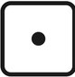

Startseite
Spiel
Optionen
Ranking
Regeln
Impressum
Datenschutz
Login
Auf dieser Seite wird das Spiel spielbar sein

Würfle
Block
Kombi
Spieler 1
Einser
Zweier
Dreier
Vierer
Fünfer
Sechser
Summe oben
Bonus
Oben Gesammt
Dreierpasch
Viererpasch
Fullhouse
Kleine Straße
Große Straße
Kniffel
Chance
Summe untern
Summe Gesamt